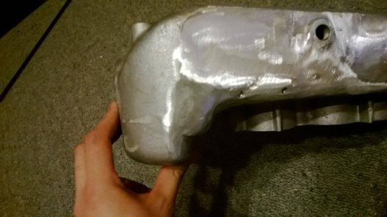

-
Got really bored tonight so i wondered what a really smoothed stock plenum would look like.
Started carefully chopping off ugly and unnecessary brackets to see what it looked like.
Here is where I am at so far
a bit more time with a flapper wheel and threading one hole and i think it will look pretty good.
I'm thinking hard about Zach's Gutted plenun top85 Turbo Slick Top
__________________________________________________ _____ -
If you have a stock plenum, you shouldn't need Zach's plenum top. ASCO sells that part so you can still use the stock cover with a gutted plenum. If yours is stock the cover should still mount using the holes on top."zetto sun-ichi" group" -
well its obvious that he's thinking of gutting the plenum then, tnokes9.
looking good james. you can gut the plenum with a 4.5 inch grinder (yes, i'm not kidding). make sure you have the plate in hand before attempting this, as the 60 dollar gutted plenum I bought was from side to side across the whole width, making welding the top near impossible without using a boat load of filler rod. at that stage- what's the point of even trying with so much added filler?
if you need pictures of my progress on that with 4.5 grinding work, I can show you. I won't be doing a forward facing intake anymore but i am still going to use the gutted plenum for my new idea. -
Hey Careless,
Those pics or a link would be great.
Tonight I am planning on hacking off the EGR standoff and my brother in law is going to tig up some holes for me.
Watch out for more progress, Tnokes9 this will be a gutted plenum I also know all about ASCO products as I even designed one for them.85 Turbo Slick Top
__________________________________________________ _____ -
I always wondered if instead of "gutting" the plenum, someone were to "bulge" the plenum on the sides more, keep it flat but add volume, while not interrupting the port baffles… how would that perform? -
Somebody who has cut up a stock plenum could model it and apply some CFD analysis to it ? I could CAD model it, but i would rather CAD model a Streetfighter / Satan Plenun and CFD that instead.
Made a little progress tonight.
EGR Port ? What EGR Port ?
85 Turbo Slick Top
__________________________________________________ _____ -
once you get it smooth as poss with the flap disc, 40grit sand paper on an orbital sander does wonders to shaping metal- event mild steel. just make sure you get a 10 pack at least. lol
i find it's the best sandpaper/tool to do final shaping before attacking things with the less gritty sandpaper for metal work like this. -
Hah, nice! I just did this not too long ago, and had all the holes and dimples welded up. Turned out nice.
Keep at it, it's quite the rewarding little task, it looks nice under the hood when it's cleaned up.


-
Strike, have you got an engine bay shot ? Would love to see it.
Looks great !85 Turbo Slick Top
__________________________________________________ _____ -
We kind of think alike.G-E;342138 wrote: I always wondered if instead of "gutting" the plenum, someone were to "bulge" the plenum on the sides more, keep it flat but add volume, while not interrupting the port baffles… how would that perform?"Its the s12's sexy over weight step daughter, the z31" -
This is the only decent one I have right now, I dont have any showing the other side yet for some reason… I have to pull the car back inside and replace the starter again, so maybe I'll take some more shots once I clean it up again hah
Top photo is the most recent with the IC
-
The one thing that detracts from the look of your plenum is the Buldge where the AIC was.DD:
86 Black Turbo 5spd
The Fallen:
84 red n/a auto Slicktop, 86 Black 2+2 n/a 5spd
Parting Currently:
86 White Turbo 5spd, 88 n/a 5spd, 84 AE, 88 Shiro #64
Garage Sale -
Haha, yeah, it's such a large hole, the only real way to flush it over would be to chop the flange off grind the area smooth, weld a plate cut to fit the hole like a glove, tig it nicely around the edge, and see if you can grind the weld smooth to blend it flush. Just seemed like so much work for a stock plenum -
Agreed, if it had been opened for gutting it would be easier, especially with the ASCO plate.DD:
86 Black Turbo 5spd
The Fallen:
84 red n/a auto Slicktop, 86 Black 2+2 n/a 5spd
Parting Currently:
86 White Turbo 5spd, 88 n/a 5spd, 84 AE, 88 Shiro #64
Garage Sale -
I did the same thing. Below is the only photo I have of it. I've sinced moved onto gutting and smoothing a max plenum. (I paid $20 for it and $100 postage from US to AUS)

Copyright © 2006–. All rights reserved. Privacy Policy